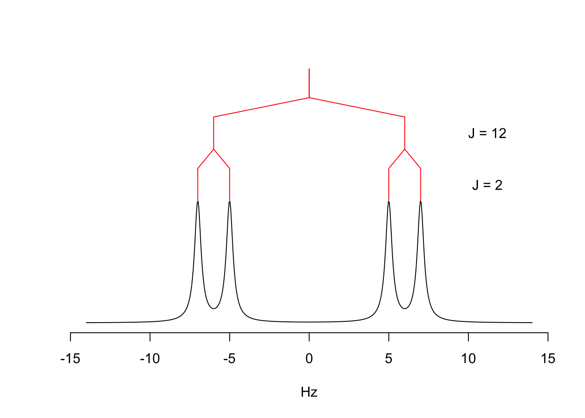
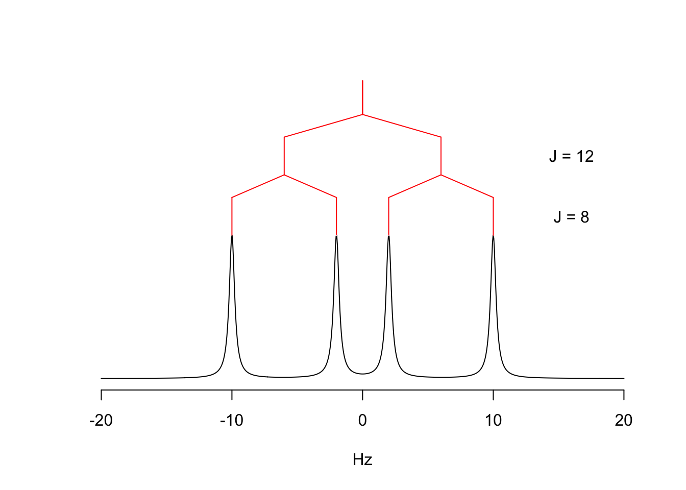
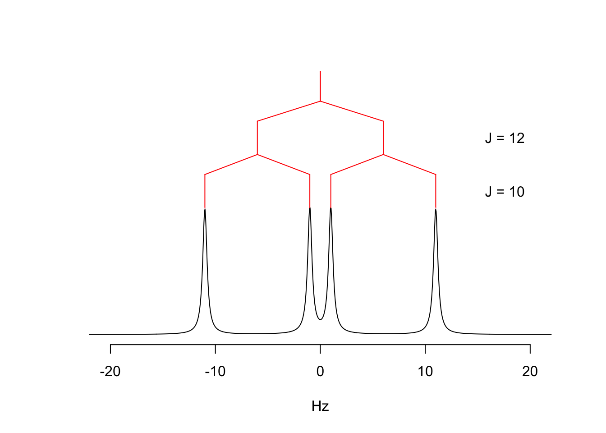
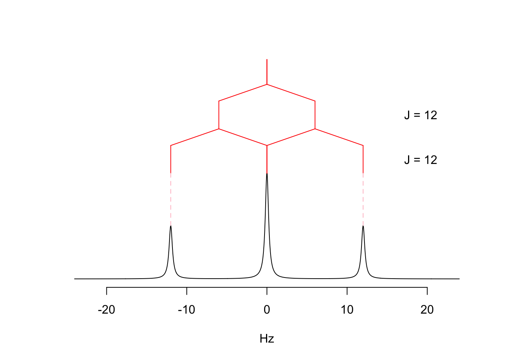

A Function to Draw Complex Multiplets
Inspired by Roman A. Valiulin’s book NMR Multiplet Interpretation (discussed previously), I decided to write an R function to draw complex multiplets. The function will draw the multiplet, and optionally, can draw a splitting tree and some annotations.1 Some of you may find this useful for teaching the topic.
The function is called multiplet and it resides in the SpecHelpers package, which was just updated to version 0.3.1. Here are some examples of the function at work, drawn from Valiulin’s book:

One interesting aspect of Valiulin’s approach is that all multiplets are treated as doublets of doublets … of doublets. We can use the new function to show how a triplet can be understood as a doublet of doublets in which the coupling constants are the same. Starting from what is clearly a doublet of doublets we can see how the spectrum changes as the coupling constants become more equal, finally leading to the overlap of the two central peaks, giving a triplet.
Jvals <- c(2, 4, 8, 10, 11, 12)
for (i in 1:length(Jvals)) {
res <- multiplet(J = c(12, Jvals[i]), pw = 0.25)
}





I hope some of you will find this function useful!
Footnotes
As a side note, drawing the spectrum was easy because
SpecHelpersalready contained the necessary functions. On the other hand, getting the splitting tree correct was, well, a bit of work. In contrast to how quickly one might sketch this out by hand, creating it computationally was much more challenging.↩︎
Reuse
Citation
@online{hanson2025,
author = {Hanson, Bryan},
title = {A {Function} to {Draw} {Complex} {Multiplets}},
date = {2025-03-06},
url = {http://chemospec.org/posts/2025-03-06 More Multiplets/MoreMultiplets.html},
langid = {en}
}